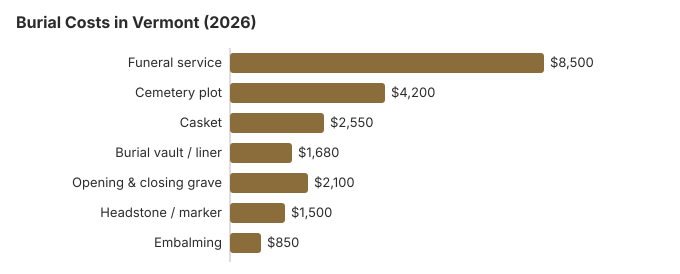

Burial Costs in Vermont (2026)
A Vermont burial usually means three separate purchases: the funeral home's services, a plot and grave opening from the cemetery, and a marker from whoever cuts the stone. Our estimates put the whole thing at $19,530 to $24,030. The two lines that move most are the casket and the cemetery, and in a state with many small town and church cemeteries, the cemetery is where a phone call or two pays off.
The Bill for a Vermont Burial, Item by Item
| Charge | Vermont estimate | Low to high |
|---|---|---|
| Funeral service | $8,500 | $6,375 – $11,050 |
| Cemetery plot | $4,200 | $2,100 – $8,400 |
| Casket | $2,550 | $850 – $6,800 |
| Burial vault / liner | $1,680 | $800 – $10,000 |
| Opening & closing grave | $2,100 | $500 – $3,000 |
| Headstone / marker | $1,500 | $500 – $5,000+ |
| Embalming | $850 | $500 – $1,500 |
About these figures: they are our own Vermont estimates, built from a cost model rather than a survey of local funeral homes or cemeteries, and they are not a quote or professional advice. See how we calculate them or read the full disclaimer.
State sources: 18 V.S.A. § 5313; § 5323.

Put every cemetery charge together with the funeral home's bill and a Vermont burial comes to somewhere between $19,530 and $24,030 in our model; where you land depends mostly on the casket you pick and the cemetery you use.
Burial Choices Open to Vermont Families
Where a Vermont Family Can Spend Less
Most of the savings on a Vermont burial come from the cemetery side of the bill, so start there:
- Call more than one cemetery. The FTC Funeral Rule does not reach most cemeteries, but a Vermont cemetery will usually send its price sheet if you ask for it by name.
- Ask about the winter months. From December through March many Vermont cemeteries add a frozen-ground fee or hold the casket in a receiving vault until a spring burial, and either can change the final bill.
- Look at town and church grounds. Vermont has many small municipal, association and church cemeteries, and their plot prices are worth comparing with a commercial memorial park.
- Widen the map past Burlington. A cemetery 20 to 30 minutes outside the Burlington area may charge noticeably less for a plot, and the family can still visit easily.
Winter Burials in Vermont
Vermont ground freezes hard, and many cemeteries do not open graves in deep winter. Some hold the casket in a receiving vault until spring, and some add a frozen-ground charge, often $500 to $1,500 for a burial between December and March. When a death comes between late November and early March, ask each cemetery directly what its winter practice is and what it charges; few will mention it unless asked.
Burial Resources
- Funeral Consumers AllianceNonprofit consumer advocacy for funeral pricing
- Headstone & Monument GuideCosts, types, and buying tips
- Green Burial OptionsEco-friendly and natural alternatives
- Best Online Casket RetailersCaskets bought online often cost less
- Best Burial InsuranceCompare plans to cover burial expenses
Compare Funeral Costs
- Average Funeral Cost in 2026National cost breakdown with real prices
- Cremation vs. Burial Cost ComparisonSide-by-side price comparison to help you decide
- Funeral Cost BreakdownEvery line item explained: know what you're paying for
- Cheapest Funeral OptionsLower-cost alternatives, with typical price ranges
- Direct Cremation: Most Affordable OptionNFDA 2023 median $2,645 with a family-supplied container (latest available)
- How to Compare Funeral PricesStep-by-step guide to getting the best price
Frequently Asked Questions
How does a Vermont burial bill add up?
Our Vermont figures: about $8,500 for the funeral home's service, $4,200 for a plot, $2,550 for a casket, $1,680 for a vault and $2,100 to open and close the grave, with a headstone anywhere from $500 to $5,000. Taken together that is $19,530 to $24,030.
Does a Vermont cemetery make you buy a vault?
Usually, but because of the cemetery's own rules rather than Vermont law: an outer container stops the grave from sinking, which makes mowing and upkeep easier. A Vermont vault or liner can cost anywhere from $800 to $10,000, so ask whether a plain concrete liner meets the rule.
What is the least expensive way to bury someone in Vermont?
Direct burial, with no viewing, service or embalming, costs least on a Vermont price list. A natural burial is a close second where a cemetery allows it; Vermont law even lets a natural burial ground mark graves by GPS or survey rather than a standard plat (18 V.S.A. § 5323).
How do you compare cemeteries in Vermont?
Call the town or association that runs each cemetery and ask for its plot price, its opening and closing fee and its vault rule in writing. The FTC Funeral Rule binds funeral homes, not most cemeteries, so a written list from a cemetery is a courtesy you should still request.
What else gets added on top of a Vermont burial estimate?
Cash advance items. The funeral home pays these to others and passes them on: certified copies of the death certificate, a newspaper obituary, flowers and similar costs come on top of the $19,530 to $24,030 Vermont range.
Can a Vermont family choose a green burial?
Yes, in some places. Some Vermont cemeteries have a hybrid section, set aside a section where embalming and vaults are not used. Our green burial guide explains the options; then call the cemeteries near you, since what each one allows changes.
More for Vermont
Vermont's burial-transit permit and family plots
Nothing is buried in Vermont without a burial-transit permit. A town clerk or deputy, a Vermont funeral director, a registered crematory manager or a law enforcement officer can sign it, and clerks must name deputies so a permit can be had when the town office is closed (18 V.S.A. § 5201; checked October 29, 2026).
- Burial at home: a landowner may set aside part of land owned in fee as a burial place for immediate family, as long as state and town health rules are met (18 V.S.A. § 5319(a)(2)).
- Depth: the bottom of the outer coffin, or of the body, must be at least three and a half feet below natural ground (18 V.S.A. § 5319(b)).
- Families doing it themselves: the Vermont Department of Health says to have the preliminary report of death and the permit before moving the body, then sign the permit after the burial and file it with the town clerk.
Who to call about a Vermont burial
For a license check or complaint about a funeral home arranging a burial in Vermont, call the Vermont Office of Professional Regulation at 802-828-1188; Vermont cemeteries can have a separate regulator. Vermont cemetery law sits in Title 18, Chapter 121. Under 18 V.S.A. § 5313, a cemetery's record of where remains are permanently placed must be open to the public at all reasonable times, and § 5323 lets a natural burial ground locate graves by mapping, surveying or GPS instead of a standard plat.
The Funeral Consumers Alliance does not count Vermont among the nine states that make a funeral director part of every burial. A Vermont family can therefore settle the plot, the opening of the grave and the kind of container directly with the cemetery. Burial itself has no waiting period; only if the plan turns to cremation does a 24-hour wait apply (18 V.S.A. 5201).
Help with the cost
Vermont's General Assistance program, run by DCF, pays up to $1,100 toward a burial once the resources of the person who died and of a spouse are counted, and relatives can contribute on top without the payment being cut. (Source: Vermont DCF General Assistance burial rules; 33 V.S.A. § 2301.) The $255 Social Security payment, which goes only to a surviving spouse or child, would not cover even the $4,200 plot we estimate for Vermont.
A veteran can be buried with no charge for the plot or the marker in a national cemetery. In Vermont that usually means the Vermont Veterans Memorial Cemetery (802-828-3379), the state-run veterans ground (source: VA National Cemetery Administration).
Before you sign anything in Vermont
- Get the cemetery's charges (plot, opening and closing, vault rule, marker rules) separately from the funeral home's price list.
- Ask whether the cemetery will accept a headstone bought from an outside monument dealer.
- Have DCF confirm the $1,100 General Assistance amount before anyone buys a plot.
- For a veteran, check eligibility with the Vermont Veterans Memorial Cemetery before paying for a private grave.
- If a funeral home misstates its burial prices, report it to the Office of Professional Regulation at 802-828-1188; the call costs nothing.